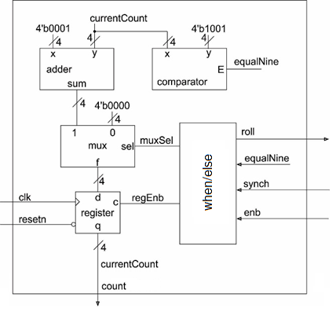

| Lecture | 4 |
| Code | incompleteMod10Counter.vhd |
| Class Objectives | Sequential Circuits, Process, Timing, Sequential Building Blocks |
Sequential Elements
You can't build sophisticated digital device without sequential circuits, circuits with memory. When a circuit has memory it can do things like count up because in order to count up to 10, you need to remember what number you are currently at in order to count up to the next number in the sequence. Instead of using the word memory, I will use the term, state. The state of a sequential circuit is an arrangement of 0's and 1's that are stored in some basic memory element.The most basic memory element is the D flip flop. A D flip flop stores a single bit and output's this stored value, its state, on its Q output. On the rising edge of the clock, the D flip flop stores the bit present on the D input. The D flip flop has an active low synchronous reset input. Whenever this input is at logic 0, the stored value will go to 0 on a rising edge of the clock. To operate the D flip flop as a memory storage device the reset input should be held at logic 1. This complex behavior is captured in the following state table.
| clk | reset | D | Q+ |
| 0,1,falling | x | x | Q |
| rising | 0 | 0 | 0 |
| rising | 1 | 0 | 0 |
| rising | 1 | 1 | 1 |
The schematic for a D flip flop is shown below. The clk input has a triangle on its input meaning that this is a positive edge triggered input. The circle on the reset input means that this is an active low input. Now, try your hand at determining the Q output for the waveform given.

Finally, let's look at the VHDL code that realizes a D flip flop. I will focus on the architecture code assuming that you can produce the entity description if requested.
process(clk)
begin
if(rising_edge(clk)) then
if(reset = '0') then
Q <= '0';
else
Q <= D;
end if;
end if;
end process;
Some important items to discuss:
- process(clk) will cause the code between the begin and end to "run" when the signal in parenthesis , clk, changes. The list of variables in parenthesis is called the sensitivity list because the process is sensitive to changes in these variables.
- rising_edge(clk) The expression "rising_edge" is a reserved word and is true when the argument, clk, has a rising edge.
- if/then/else/end if operates just like it does in a normal programming language.
Mod 10 counter example
A mod 10 counter counts up from 0 to 9 and then rolls over back to 0 to count up again. The term “mod” comes from the word modulus. If you take a number x and form “x mod 10” you get the integer remainder after division by 10. For example, 12 mod 10 is equal to 2 because 12/10 = 1 with a remainder of 2. Note that “x mod 10” will always produce a value between 0 and 9.Truth Table
The following state table defines one possible realization of a mod 10 counter.| clk | reset | enb | synch | count | Note |
| 0,1,falling | x | x | x | Q | No clk edge |
| rising | 0 | x | x | 0 | Global reset |
| rising | 1 | 0 | 0 | Q | Hold |
| rising | 1 | 1 | 0 | Q+1 mod 10 | Count |
| rising | 1 | 0 | 1 | 0 | Synch reset |
| enb | count | roll |
| 1 | count <9 | 0 |
| 1 | count ==9 | 1 |
Timing Diagram
Let's try to complete the partial timing diagram below.An important concept to keep in mind is that the output of a sequential device, the mod10Counter in our case, changes just after the positive edge of the clock.
- Clock edge at left edge of timing diagram. Since reset equals 0 during this positive clock edge, this is a global reset. This causes count to go to 0. This value of count causes roll = 0.
- Clock edge between time 0 and 1. reset went back to 1 and now enb equal 1 and synch equals 0. So count goes to 1 just after this positive edge.
- Next 8 clock edges. reset is still 1 enb equals 1 and synch equals 0. So count counts up from 1 to 9.
- Clock edge between time 9 and 10. enb equals 0 and synch equals 0, the currenCount does not change and stays at 9. At the beginning of clock interval 9, the roll signal would have gone from logic 0 to logic 1 and stayed that way until enb went to logic 0. Since enb equals 0, no roll over is eminent, so the roll output will stay low until enb is brought back to logic 1.
- Clock edge between time 10 and 11. enb equals 1 and synch equals 0, so count increments mod 10, causing count to equal 0.
{kind=link}
Circuit Diagram
After completing the timing diagram, see if you can figure out how to construct the counter using the arrangement of devices show in the picture below.- You may assume that all these elements are able to handle 4-bit values, just make sure to draw a hash through these signals with a "4" next to it.
- You should not draw additional lines in this picture, instead labeled the wires with names and use these names to create logical connections between signals with the same name.
- Draw a border around your circuit. The only signals that should cross the boundary are those which are part of the entity description.

VHDL
As we know, the VHDL description of a circuit consists of two components, the entity and the architecture. The entity is pretty simple as it consists of those signals in the state table description given. The direction of the signals should be straight forward after you look at the architecture diagram above.The architecture requires instantiating an adder, multiplexer, comparator and register. Then when/else statement requires from thought to make sure that you cover all cases and cover them correctly. The source code for my implementation of the mod10Counter is given at the top of this lecture note. Beyond the logic, which can be tricky, there is one special note that you may have noticed in the architectural block diagram, currentCount and count. VHDL does not allow an out STD_LOGIC or STD_LOGIC_VECTOR to be used as the source value for another assignment statement. In other words a signal that is an out STD_LOGIC cannot be on the right hand side of a concurrent assignment statement nor used as a value in a coponent instantations statement. I expect that you will need to spend a few minutes to determine the relationship between the signal names in the VHDL code and the architectural diagram above would be well spent.